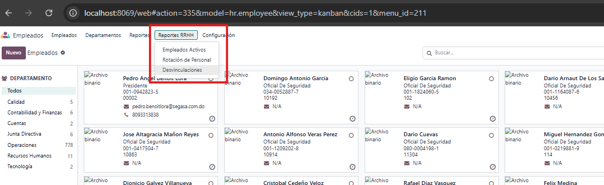
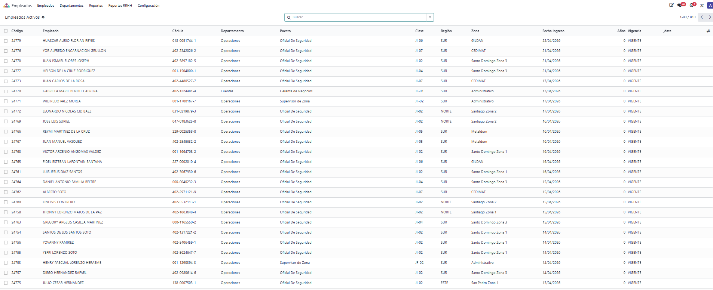
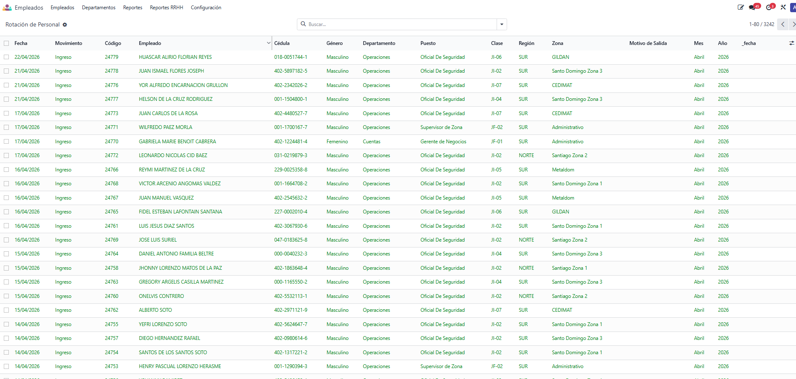
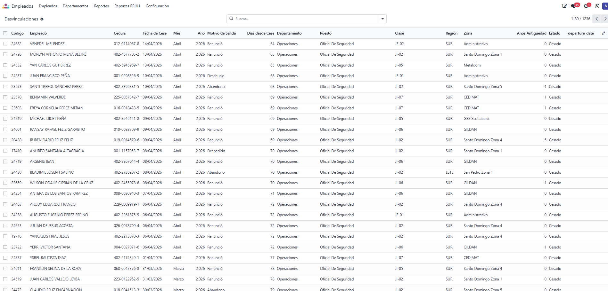

ISJO TECHNOLOGY - HR Reports
Reportes Operativos de Recursos Humanos
Reportes estratégicos para la toma de decisiones
📊
📋 Descripción del Módulo
El módulo ISJO TECHNOLOGY - HR Reports es una suite de reportes operativos diseñada para el área de Recursos Humanos, que proporciona visibilidad completa sobre la plantilla, rotación de personal y desvinculaciones, facilitando la toma de decisiones basada en datos.
🎯 Beneficios clave:
- ✅ Empleados Activos - Vista detallada de todo el personal activo con sus datos clave
- ✅ Rotación de Personal - Índices de rotación por zona, departamento y puesto
- ✅ Desvinculaciones - Historial completo de salidas con motivos y análisis temporal
- ✅ Vacantes por Cubrir - Identificación de posiciones abiertas (próximamente)
- ✅ Datos en tiempo real basados en la información de empleados y contratos
- ✅ Interfaz intuitiva con filtros, agrupaciones y vistas gráficas
👥 Empleados Activos

Vista completa del personal activo con información clave:
- 🆔 Código de empleado, nombre y cédula
- 📅 Fecha de ingreso y antigüedad (días y años)
- 🏢 Departamento, puesto, clase, región y zona
- ⚡ Filtros rápidos por departamento, puesto, clase y región
- 📊 Agrupación por departamento, puesto o clase
🔄 Rotación de Personal

Análisis detallado de la rotación por zona y departamento:
- 📊 Índice de rotación a 30 y 15 días
- 📊 Rotación acumulada anual
- 📊 Salidas e ingresos en los últimos 30 y 15 días
- 📊 Tasa de reemplazo para medir la capacidad de cobertura
- 🚨 Niveles de alerta: ALTA (>15%), MEDIA (>8%) y BAJA
- 📈 Vista gráfica de barras para comparar métricas
🚪 Desvinculaciones

Historial completo de salidas de personal con análisis temporal:
- 📅 Fecha de cese y días desde la salida
- 📋 Motivo de salida (renuncia, despido, jubilación, etc.)
- 📊 Análisis por mes y año de cese
- ⏳ Días trabajados y años de antigüedad al momento del cese
- 🔍 Filtros por período (últimos 30 días, 3 meses, año actual)
- 📊 Agrupación por mes, año, motivo, departamento o zona
📌 Vacantes por Cubrir

Próximamente disponible - Reporte de posiciones vacantes que permitirá:
- 📊 Identificar todas las posiciones abiertas por departamento
- 📊 Análisis de antigüedad de la vacante
- 📊 Priorización de contrataciones basada en indicadores
- 📊 Integración con el módulo de reclutamiento
🔗 Integración y Datos en Tiempo Real
- 📌 Datos extraídos directamente de hr.employee y hr.contract
- 📌 Vistas SQL optimizadas para máximo rendimiento
- 📌 Sin necesidad de procesos de sincronización adicionales
- 📌 Compatible con todos los módulos de RR.HH. de Odoo
- 📌 Reportes exportables a Excel y formatos estándar
- 📌 Vistas Tree, Graph y Search para una experiencia completa
🔐 Control de Acceso

Acceso controlado según el perfil del usuario:
- 👁️ Usuario estándar - Visualización de todos los reportes
- 👑 Gerente de RR.HH. - Acceso completo incluyendo exportación
🔧 ¿Necesita funcionalidades específicas?
Este módulo puede extenderse según los requerimientos específicos de su organización. Podemos agregar:
- 📌 Reportes de asistencia y ausentismo
- 📌 Indicadores de productividad por departamento
- 📌 Dashboard ejecutivo con KPIs personalizados
- 📌 Integración con sistemas de nómina externos
- 📌 Campos adicionales según necesidades institucionales
Contáctenos para analizar sus requerimientos específicos.
¡Optimice la gestión de su talento humano con datos precisos!
Tome decisiones informadas con reportes operativos en tiempo real, diseñados para las necesidades de ISJO TECHNOLOGY.
¿Tiene alguna pregunta?
Ventas : +1 (829) 944-2168
Escríbanos un correo
Soporte : info@isjo-technology.com